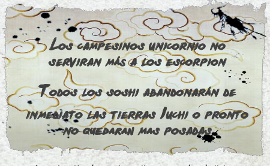

|  | sus sirvientes anuncian que una nota acaba de llegar por paloma mensajera. La carta está pobremente escrita, con manchas de tinta y mala caligrafía, como si estuviera escrita por un niño o alguien que acaba de aprender a escribir. Si los magistrados no siguen la pista de la paloma, sus sirvientes la venderán a un refugiado para su olla. Esto no es una gran idea, ya que la ruta más directa para localizar el lugar de origen del ave es a través del hechizo “el Corazón de la Naturaleza”, persuadiendo a la paloma para volar de regreso a su lugar de descanso y seguirla a caballo. Preguntar acerca de las palomas les hará saber que el pueblo de Yotomo es una aldea conocida por la cría y venta de aves de mensajería. Se trata de un viaje de medio día de distancia hacia las montañas, y los terroristas podrían atacar de nuevo en cualquier momento. |